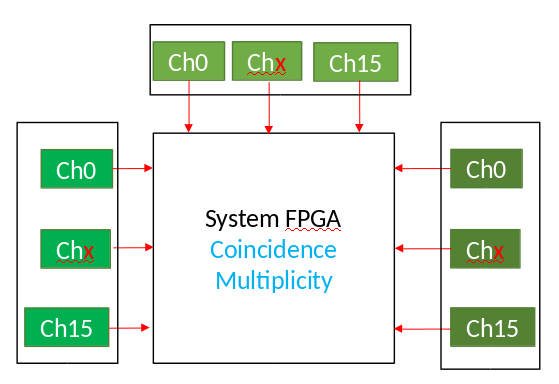
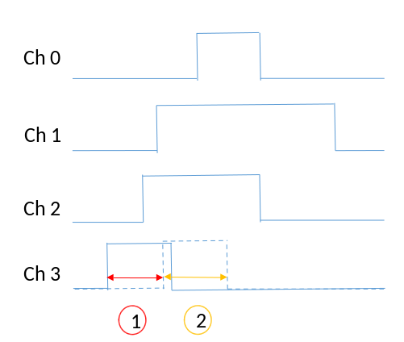
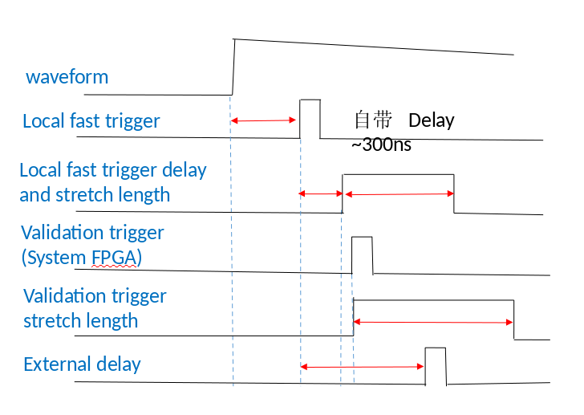

Logic¶
Logic function¶
Whether each event of a certain signal is recorded depends on:
Fast trigger select (first trigger)
Control logic (second trigger)
Fast trigger select：
Local fast filter
Channel validation trigger
Module fast trigger
Control logic：
Module validation trigger
Channel validation trigger
Veto
Pileup
…
As shown in Figure, the incoming analog pulse is first digitized by the ADC and then enters the signal processing circuitries in the Signal Processing FPGA, each of which processes ADC data from 4 channels of a Pixie-16 module.
The digitized data stream is first fed into two branches: a fast filter generating fast triggers to be sent to the System FPGA and a Delay FIFO which could be used to compensate for the delay between fast triggers and the external triggers.
The digitized data stream passing through the Delay FIFO is then branched into four parts:
energy filter which samples energy running sums at the PeakSample time;
trigger filter which detects pulse and performs pileup inspection;
capture FIFO which delays the ADC data according to the trace delay parameter value before the ADC data is streamed into the Trace Dual Port Memory (DPM) when a valid pulse is detected;
CFD circuitry where a CFD trigger is generated to trigger the computation of QDC sums, latch timestamps and record traces.
The Control Logic in the signal processing FPGA utilizes the local fast trigger, CFD trigger, veto and external triggers to determine whether and when to stream waveform data into the Trace DPM and to write event information into the Header DPM. The DSP polls the status of the DPMs through the Status Registers and moves event data into the External FIFO through the DSP bus and the System FPGA.
Trigger Stretch Lengths
External trigger stretch is used to stretch the module validation trigger pulse.
Channel trigger stretch is used to stretch the channel validation trigger pulse.
Veto stretch is used to stretch the veto pulse for this channel.
Fast trigger backplane length is used to stretch the fast trigger pulse to be sent to the System FPGA, where this fast trigger can be sent to the backplane to be shared with other modules, or can be used for making coincidence or multiplicity triggers.
FIFO Delays
External delay length is used to delay the incoming ADC waveform and the local fast trigger in order to compensate for the delayed arrival of the external trigger pulses, e.g., module validation trigger, channel validation trigger, etc.
Fast trigger backplane delay is used to delay the fast trigger pulse before it is sent to the System FPGA for sharing with other modules through the backplane or making coincidence or multiplicity triggers.

Module Fast Trigger(for trigger)¶
Module fast trigger has four options：
- Ext_FastTrig_In(From this module)
Ext_FastTrig_Sel(Front panel TTL input)
Int_FastTrig_Sgl(Local fast trigger of a specified channel in this module)
FTIN_Or(The OR of local fast trigger of all channel in this module)
LVDS_FastTrig_FP(Front panel RJ45 port input)
ChanTrig_Sel(The valid trigger of a specified channel of the module)(Share a setting with module validation trigger)
FT_LocalCrate_BP(Trigger sent by the specified module in this crate)
FT_In_BP(Trigger sent by the specified module on the specified crate in multiple crates)
FT_WiredOr(OR of local fast trigger of all modules in this crate)
Module Validation Trigger(for control logic)¶
Module validation trigger has five options：
- Ext_ValidTrig_In(From this module)
Ext_ValidTrig_Sel(Front panel TTL input)
Int_ValidTrig_Sgl(Local fast trigger of a specified channel in this module)
FTIN_Or(The OR of local fast trigger of all channel in this module)
LVDS_ValidTrig_FP(Front panel RJ45 port input)
ChanTrig_Sel(The valid trigger of a specified channel of the module)(Share a setting with module fast trigger)
ET_LocalCrate_BP(Trigger sent by the specified module in this crate)
ET_In_BP(Trigger sent by the specified module on the specified crate in multiple crates)
ET_WiredOr(OR of local fast trigger of all modules in this crate)
Front panel module GATE input LVDS signal
Channel Validation Trigger(for trigger/control logic)¶
Channel validation trigger has five options：
Independent setting for each channel, from multiplicity
Independent setting for each channel, from coincidence
One setting for every 4 channels, derived from the left, its own and right modules FT
One setting for every 4 channels, from the coincidence between its own FT and Ext_FastTrig_In
Independent setting for each channe, the front panel channel GATE inputs the LVDS signal (shares one input port with the front panel Veto)
Veto¶
OR from ModuleVeto and ChannelVeto:
- ModuleVeto source has two options：
Module Validation Trigger
Front panel Module Gate
- ChannelVote source has two options：
Channel Validtion Trigger
Front panel Gate input for channel (Share one input port with the front panel Channel validation trigger)
System FPGA（coincidence/multiplicity）¶
Multiplicity: For the channel set up, the left neighbor module, its own module, and the right-side module have a total of 48 channels, and you can choose the number of channel to participate in multiply trigger.
Coincidence: For the channel set, the left neighbor module, its own module, and the right neighbor module, each module match the set criteria to give a coincidence trigger.
It takes about 100 ns for the fast filter trigger of other modules to pass to the module through the crate backplane. Therefore, by adjusting the gate width and delay, it is guaranteed to coincidence and multiply trigger.
Fast trigger stretch length: Set fast trigger gate width，
fast trigger delay length: Set fast trigger delay。
Control logic (module/channel validation trigger)
Particular attention should be paid to the fact that it takes about 100 ns for the signal to be transmitted through the backplane.